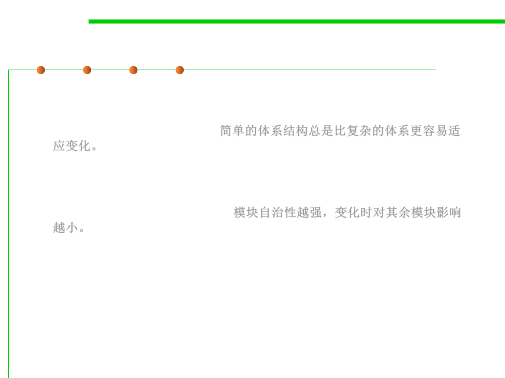

1.2 Quality Objectives of Software Construction
External 3: Extendibility
▪ Two principles are essential for improving extendibility:
– Design simplicity: a simple architecture will always be easier to adapt to
changes than a complex one. 简单的体系结构总是比复杂的体系更容易适
应变化。
– Decentralization(离散化): the more autonomous(自治的) the modules, the
higher the likelihood that a simple change will affect just one module, or a
small number of modules, rather than triggering off a chain reaction of
changes over the whole system. 模块自治性越强，变化时对其余模块影响
越小。
Chapter 3 (ADT and OOP)
Chapter 6 (Modularity and adaptability)